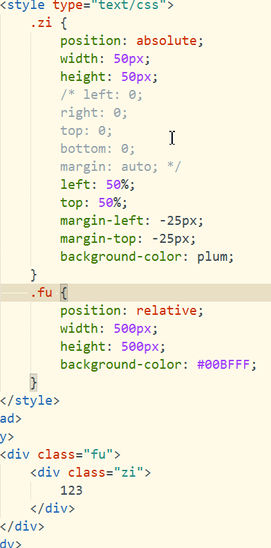
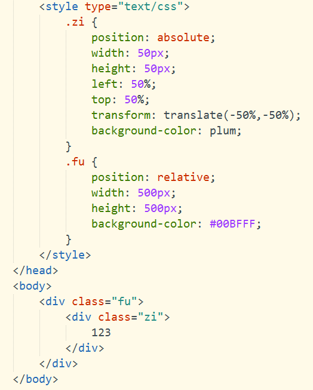

一、方案一（已知子元素的宽高）
1.子元素开启绝对定位，父元素开启相对定位
2.子元素设置left、right、top、bottom属性都为0，margin为auto
或者 （注意2、3步二选一）
3.子元素left设为50%，top设为50%，margin-left设为 -子元素的width/2px，margin-top设为 -子元素的height/2px

二、方案二（未知子元素宽高）
1.子元素开启绝对定位，父元素开启相对定位（这一步和方案一相同）
2.子元素left设为50%，top设为50%，transform设为translate(-50%,-50%)

特别说明：子元素开启了绝对定位，随之父元素也要开启非static定位（relative相对定位或者是absolute绝对定位都可以，根据需求），才能使子元素的绝对定位是相对于其父元素进行定位。
end，每种方案实现原理都不尽相同，望辩证待之。